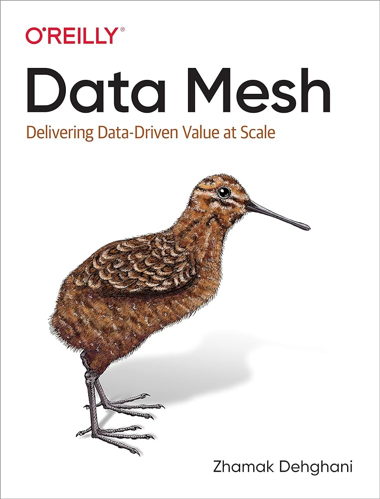
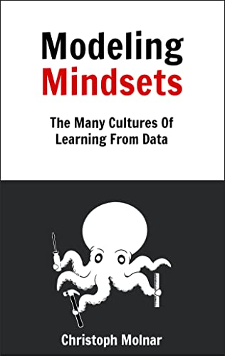
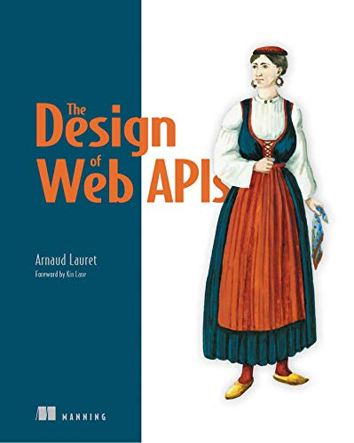
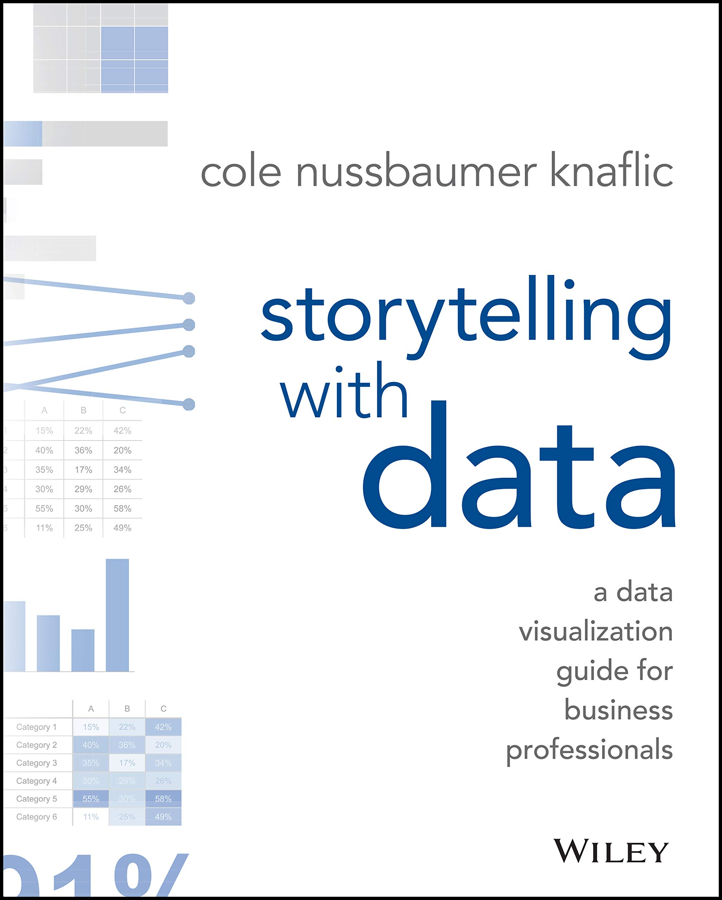
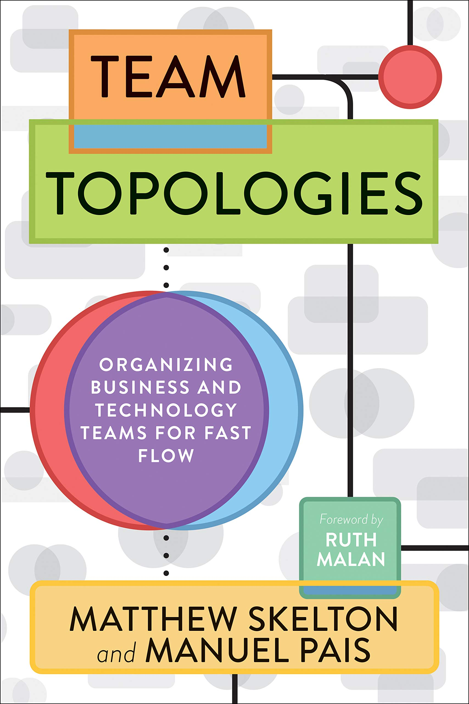
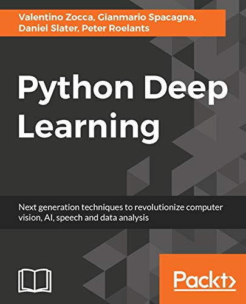
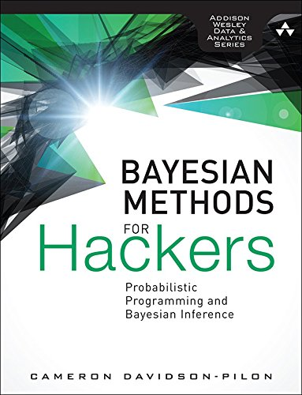
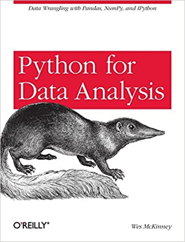

bookshelf
As I mostly read e-books, I don't have a physical bookshelf at home. I decided to build a digital bookshelf here to keep track of what I'm reading over the years (novels are not listed here). I won't write reviews here, but I'll just place a "♥" next to the books definitely worth reading.
| Inspired: how to create tech products customers love | |
|  |  |
| Data Mesh | Modeling Mindsets |
|  | |
| The Design of Web APIs | The Five Dysfunctions of a Team |
|  |  |
| ♥ Storytelling with Data | Essentialism: the Disciplined Pursuit of Less |
|  | |
| ♥ Team Topologies | ♥ Agile Estimating and Planning |
| Mythical Man-Month | The Black Swan: The Impact of the Highly Improbable |
 |
 |
| Designing data-intensive applications | ♥ The Phoenix Project |
| ♥ Thinking, Fast and Slow | Deep Learning |
 |
 |
| The Docker Book: Containerization is the new virtualization | Python Deep Learning: Next generation techniques to revolutionize computer vision, AI, speech and data analysis |
 |
|
| ♥ Pragmatic Programmer, The: From Journeyman to Master | ♥ The Signal and the Noise: The Art and Science of Prediction |
 |
|
| The Art of R Programming: A Tour of Statistical Software Design | Why: A Guide to Finding and Using Causes |
|  |  |
| ♥ Bayesian Methods for Hackers: Probabilistic Programming and Bayesian Inference | Python for Data Analysis: Data Wrangling with Pandas, NumPy, and IPython |
| Speech and Language Processing | Computer Networking: A Top-Down Approach |